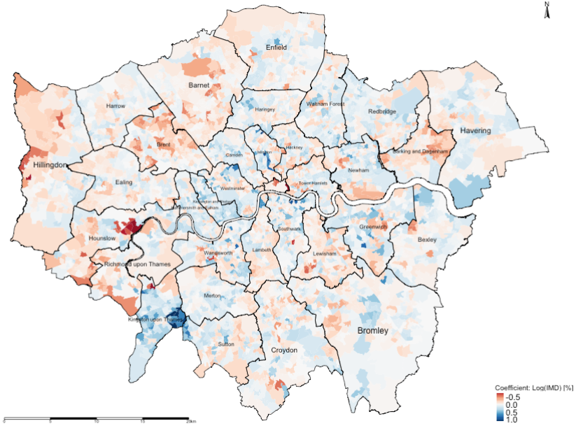
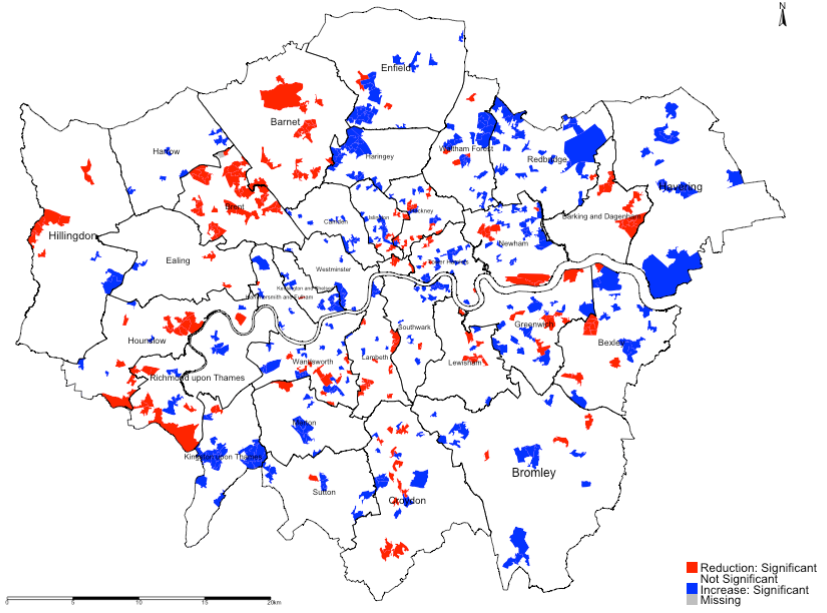
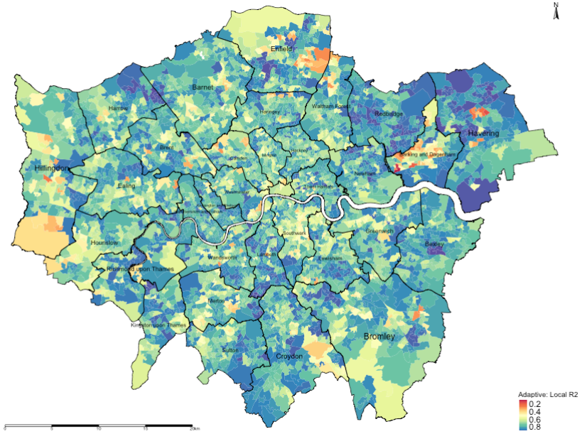

# Load packages using library() function
library("sf")
library("tmap")
library("spdep")
library("sp")Week 8: Geographically Weighted Regression (GWR)
1 Introduction
The goal for this week’s session is to introduce you to a type of spatial model known as the Geographically Weighted Regression (GWR). GWR is a statistical model which can indicate where non-stationarity may take place across space; it can be used to identify how locally weighted regression coefficients may vary across the study area (unlike its counterpart i.e., the Spatial Lagged and/or Error Models which provides global coefficients). Similar to last week’s sessions, we will first need to explore the residuals from a linear regression model to identify evidence of spatial autocorrelation before implementing a spatial model. But, this time round, we will run a GWR and observe how the coefficients for a set of independent variables vary across space.
1.1 Learning outcomes
In this tutorial we will be using last week’s on the house price dataset in London, alongside the social-risk factor variables such as public transport accessibility (PTA), average income and socioeconomic deprivation (IMD) to see how their association with house prices vary across space. This will be achieved using the GWR model.
1.2 Datasets & setting up the work directory
We will be using the data from last week. You should have already downloaded all this data for last week’s practical lesson - if you have not done so already you can access them by clicking here.
1.2.1 Installing packages
We will need to load the following packages:
sf: Simple Featurestmap: Thematic Mappingspdep: Spatial Dependence (Weighting schemes & Spatial Statistics)sp: Package for providing classes for spatial data (points, lines, polygons and grids)
There is a new package we will need to install:
spgwr: this library enable functions for computing geographically weighted regression models in RStudio. This is based on the work by Chris Brunsdon, Martin Charlton and Stewart Fotheringham. Thespgwrpackage will need the following packages installed in the background for it to work:terraandspDataLargecar: this library enable functions for assessing multicollinearity among independent variables within a regression. A common test is the variance inflation factor (VIF) using the functionvif()with threshold of 10.
# install the packages using the install.package()
install.packages("spgwr")
install.packages("terra")
install.packages("spDataLarge", repos="https://nowosad.github.io/drat/", type="source")
install.packages("car")
# load the packages with library()
library("spgwr")
library("car")You will see the following message after using the library() function spgwr package:
NOTE: This package does not constitute approval of GWR
as a method of spatial analysis; see example(gwr)You can ignore this message.
1.2.2 Loading datasets
Remember, in last week’s practical, we used the London LSOA 2015 data.csv in RStudio to implement a spatial lag and error model. It contained the following the description for each column as follows:
| Column Name | Description |
|---|---|
LSOACODE |
Unique identification code for the geographic area |
AVEPRICE (Dependent variable) |
Average house price estimated for the LSOA in 2015 |
AVEINCOME |
Estimated average annual income for households within an LSOA in 2015 |
IMDSCORE |
Deprivation score for an LSOA in 2015 |
PTAINDEX |
Measures levels of access/connectivity to public transport |
PTACAT |
PTAINDEX rendered into a categorical variable |
You were also provided two sets of spatial data, one that is LSOA-level required for the statistical analysis and the other for Boroughs which is for customising your map. The shapefile names are as follows:
- London LSOA shape file:
London LSOA Areas.shp - London Borough shape file:
London Borough Areas.shp
Use the following functions read.csv() and read_sf() to import the above datasets into RStudio’s memory. The codes are essentially the same as last week’s practical:
# add house price and covariate data
data.london <- read.csv("London LSOA 2015 data.csv")
# import shapefile data
lsoa.shp <- read_sf("London LSOA Areas.shp")
borough.shp <- read_sf("London Borough Areas.shp")The code chunk below generates an empty map with the tmap functions. It inspects the spatial configuration of London’s LSOA with the Boroughs superimposed.
tm_shape(LSOAshp) +
tm_polygons() +
tm_shape(BOROUGHshp) +
tm_polygons(fill_alpha = 0, col = "black") +
tm_compass(position = c("right", "top")) +
tm_scalebar(position = c("left", "bottom"))Output from the above tmap() functions:

Use the merge() function to bring together the LSOA shapefile and house price dataset create a spatial data frame object.
# Merge the two files using the "LSOACODE" column
spatialdatafile <- merge(lsoa.shp, data.london, by.x = "LSOACODE", by.y = "LSOACODE")1.3 Implementing the Linear Regression model
1.3.1 Obtaining the residuals from a non-spatial model
The GWR is a spatial regression model akin to the lag and error models taught last week. Similarly, in order to implement a GWR, we need to first test the residuals for evidence of spatial autocorrelation. To do this, we must first run a linear regression model get the residuals.
Recall from last week, we can do this for the log-transformed house price against the independent variables (i.e., income, deprivation and accessibility) using the lm() function:
# lm() function builds a regression model and stores model output into the object 'modelMLR'
modelMLR <- lm(log10(AVEPRICE) ~ log10(AVEINCOME) + log10(IMDSCORE) + log10(PTAINDEX), data = spatialdatafile)
# Include the 'scipen=7' argument in the summary() function remove those annoying scientific notation!
options(scipen = 7)
# summary() calls report the output stored in object 'modelMLR'
summary(modelMLR)Call:
lm(formula = log10(AVEPRICE) ~ log10(IMDSCORE) + log10(AVEINCOME) +
log10(PTAINDEX), data = spatialdatafile)
Residuals:
Min 1Q Median 3Q Max
-0.39249 -0.06489 -0.00572 0.06046 0.62993
Coefficients:
Estimate Std. Error t value Pr(>|t|)
(Intercept) -4.100992 0.095592 -42.901 < 2e-16 ***
log10(IMDSCORE) 0.136713 0.007681 17.798 < 2e-16 ***
log10(AVEINCOME) 2.036354 0.019340 105.292 < 2e-16 ***
log10(PTAINDEX) 0.030055 0.004816 6.241 0.000000000471 ***
---
Signif. codes: 0 ‘***’ 0.001 ‘**’ 0.01 ‘*’ 0.05 ‘.’ 0.1 ‘ ’ 1
Residual standard error: 0.1027 on 4964 degrees of freedom
Multiple R-squared: 0.789, Adjusted R-squared: 0.7889
F-statistic: 6189 on 3 and 4964 DF, p-value: < 2.2e-16For interpretation of the above global coefficients see last week’s practical!
You can check if presence of multicollinearity among the independent variable by using the vif() to ensure the independent variables are not co-linear with each other by ensuring their Variance Inflation Factor (VIF) is less than 10. If it exceeds 10, then those variables will have to be discarded from the model, and such regression will need to be re-run again without those discarded variables.
vif(modelMLR)Output from vif() function:
log10(AVEINCOME) log10(IMDSCORE) log10(PTAINDEX)
1.963519 2.066221 1.403051 All variables are not co-linear with each other since the VIFs are all less than 10. No need to discard any of the variables.
Now, extract the residuals and deposit them into our spatial data frame spatialdatafile
# Extract residuals from "modelLMR" object and dump into "spatialdatafile" and call the column "RESIDUALS"
spatialdatafile$RESIDUALS <- modelMLR$residualsOutput shows mapped residuals:
tm_shape(spatialdatafile) +
tm_polygons(fill = "RESIDUALS",
fill.scale = tm_scale_continuous(midpoint = 0, values = "-brewer.rd_bu"),
fill.legend = tm_legend(frame = FALSE)) +
tm_shape(borough.shp) + tm_polygons(fill_alpha = 0, col = "black") +
tm_text("BOROUGHN", size = "AREA") +
tm_compass(position = c("right", "top")) +
tm_scalebar(position = c("left", "bottom")) +
tm_layout(frame = FALSE)
Notice the spatial patterning and clusters of the LSOA areas where there’s an over-prediction of the house prices (i.e., areas that have negative residuals, or blue tones) and under-prediction (i.e., areas that positive residuals, or red tones). This visual inspection of the residuals is an indication that spatial autocorrelation may be present. We can confirm by using an Moran’s I test.
1.3.2 Use residuals and test for spatial autocorrelation
Create an adjacency spatial weight matrix apply Moran’s I test using the lm.morantest():
#generate unique number for each row
spatialdatafile$ROWNUM <- 1:nrow(spatialdatafile)
# We need to coerce the sf spatialdatafile object into a new sp object
spatialdatafile_2.0 <- as(spatialdatafile, "Spatial")
# Create spatial weights matrix for areas
Weights <- poly2nb(spatialdatafile_2.0, row.names = spatialdatafile_2.0$ROWNUM)
WeightsMatrix <- nb2mat(Weights, style='B')
Residual_WeightMatrix <- mat2listw(WeightsMatrix , style='W')
# Run the test on the regression model output object "modelMLR" using lm.morantest()
lm.morantest(modelMLR, Residual_WeightMatrix, alternative="two.sided")Output from lm.morantest():
Global Moran I for regression residuals
data:
model: lm(formula = log10(AVEPRICE) ~ log10(AVEINCOME) + log10(IMDSCORE) + log10(PTAINDEX),
data = spatialdatafile)
weights: Residual_WeightMatrix
Moran I statistic standard deviate = 56.28, p-value < 2.2e-16
alternative hypothesis: two.sided
sample estimates:
Observed Moran I Expectation Variance
0.47489527088 -0.00060260241 0.00007138138 The Moran’s I value is 0.475, which is a statistically significant value (i.e., p-value <0.001). This indicates strong evidence of spatial autocorrelation. Now, let’s see how we can use a different spatial model such as a GWR to derive local associations for each area.
1.4 Geographically Weighted Regression (GWR)
GWR overcomes the limitation of the the standard linear, and spatial lag and error regression models of generating a global set of estimates. The basic idea behind GWR is to examine the way in which the relationships between a dependent variable and a set of predictors might vary over space. As explained in the lecture, the GWR operates by moving a search window from one regression point to the next, working sequentially through all the existing regression points in the dataset. A set of regions is then defined around each regression point and within the search window. A regression model is then fitted to all data contained in each of the identified regions around a regression point, with data points closer to the sample point being weighted more heavily than are those farther away. This process is repeated for all samples points in the dataset. For a data set of 4968 observations GWR will fit 4968 weighted regression models. The resulting local estimates can then be mapped at the locations of the regression points to view possible variations in the relationships between variables.
1.4.1 Preparing the data for GWR analysis
The analysis requires points since the weights are distance-based and thus, to appropriately implement a GWR model on LSOA area data, we will need to calculate the centroids from the LSOAs and then deposit them as coordinates within the spatial data frame.
# calculate the centroids from geometries
spatialdatafile <- st_centroid(spatialdatafile)
# insert coordinates into spatialdatafile note longitude column is X and latitude column is Y
spatialdatafile <- cbind(spatialdatafile, st_coordinates(spatialdatafile))1.4.2 Fitting a GWR using gwr.sel() and gwr()
Let demonstrate with an example using the Adaptive Bandwidth, which is the preferred approach since the algorithm will compute and specify the adaptive kernel that involves using varying bandwidth to define a region around regression points - instead of using some Fixed Bandwidth.
Let’s find the optimal bandwidth using the Adaptive Bandwidth approach using gwr.sel() function:
# finding the bandwidth
BwG <- gwr.sel(log10(AVEPRICE) ~ log10(AVEINCOME) + log10(IMDSCORE) + log10(PTAINDEX), data = spatialdatafile, coords = cbind(spatialdatafile$X, spatialdatafile$Y), adapt = TRUE)
# see optimal bandwidth
BwGThe optimal bandwidth is 0.001270292 indicating the proportion of observations (or k-nearest neighbours) to be included in the weighting scheme. In this example, the optimal bandwidth indicates that for a given LSOA, 0.127% of its nearest neighbours should be used to calibrate the relevant local regression; that is about 6 LSOAs. The search window will thus be variable in size depending on the extent of LSOAs.
Note
Important note: Here the optimal bandwidth is defined based on a data point’s k-nearest neighbours. It can also be defined by geographical distance as done above for the fixed spatial kernel.
We next fit a GWR based on an adaptive bandwidth using the gwr() function:
# start timer to time how long it takes to run a gwr() on computer
start.timer <- proc.time()
# gwr() model. You need hatmatrix and se.fit specified as TRUE for testing statistical significance
gwr.model <- gwr(log10(AVEPRICE) ~ log10(AVEINCOME) + log10(IMDSCORE) + log10(PTAINDEX), data = spatialdatafile, coords = cbind(spatialdatafile$X, spatialdatafile$Y), adapt=BwG, hatmatrix=TRUE, se.fit=TRUE)
# end timer and calculate how it took for model to complete churning
end.timer <- proc.time() - start.timer
# report time taken
end.timerOutput on time taken:
user system elapsed
1490.684 96.123 1586.152
Note
IMPORTANT NOTE: Due to the following options specified in the gwr() (i.e., hatmatrix and se.fit as TRUE) it might take sometime for the gwr() to complete the estimation of local coefficients, area-specific R2, and standard error. This take approximately 1490.684 seconds (24.84 minutes) on a desktop with 3 GHz 6-core Intel Core i5 processor with 32 GB of RAM memory. It will be interesting to see how long it takes on a standard UCL desktop or on your personal laptops. Here is the ideal time for you to have a second coffee break while it churns.
# see results, finally!
gwr.modelOutput of gwr.model object:
Call:
gwr(formula = log10(AVEPRICE) ~ log10(AVEINCOME) + log10(IMDSCORE) +
log10(PTAINDEX), data = spatialdatafile, coords = cbind(spatialdatafile$X,
spatialdatafile$Y), adapt = BwG, hatmatrix = TRUE, se.fit = TRUE)
Kernel function: gwr.Gauss
Adaptive quantile: 0.001270292 (about 6 of 4968 data points)
Summary of GWR coefficient estimates at data points:
Min. 1st Qu. Median 3rd Qu. Max. Global
X.Intercept. -15.43999209 -4.26990561 -1.88765409 0.41755910 17.35599732 -4.1010
log10.AVEINCOME. -2.44598947 1.14890387 1.61696094 2.08452831 4.27148364 2.0364
log10.IMDSCORE. -0.94681986 -0.10975325 -0.00013244 0.12469522 1.08510758 0.1367
log10.PTAINDEX. -0.58629189 -0.07460266 -0.02198655 0.02452116 0.33555611 0.0301
Number of data points: 4968
Effective number of parameters (residual: 2traceS - traceS'S): 1549.125
Effective degrees of freedom (residual: 2traceS - traceS'S): 3418.875
Sigma (residual: 2traceS - traceS'S): 0.07033289
Effective number of parameters (model: traceS): 1118.3
Effective degrees of freedom (model: traceS): 3849.7
Sigma (model: traceS): 0.06628063
Sigma (ML): 0.05834576
AICc (GWR p. 61, eq 2.33; p. 96, eq. 4.21): -11242.87
AIC (GWR p. 96, eq. 4.22): -13014.96
Residual sum of squares: 16.9122
Quasi-global R2: 0.9318326 Upon first glance, much of the outputs, especially the global coefficients, are identical to the outputs of the linear model. However, if we compare the Global R-square values we can see that GWR performs way better than the linear model (i.e, GWR: 0.9318 (93.18%) versus LM: 0.7889 (78.89%)). Let’s proceed to now report the various outputs of this model across each polygon.
1.4.3 Model results
The results are always stored as a SDF object within the gwr.model output we generated from the gwr(). We can extract the SDF object according with the code below:
gwr.data <- as.data.frame(gwr.model$SDF)
# save the output as a csv so you don't have to run the model again and use in the future!
write.csv(gwr.data, file = "gwr output.csv", row.names = FALSE)Very important notes about the gwr.data object:
- The following columns in the
gwr.datacontain our LSOA-specific coefficients for log-transformed income, deprivation and accessibility:log10.AVEINCOME.,log10.IMDSCORE.andlog10.PTAINDEX.respectively. These results tell us the association between the dependent and independent variable within an LSOA. - The following columns in the
gwr.datacontain our LSOA-specific standard error estimates for log-transformed income, deprivation and accessibility:log10.AVEINCOME._se,log10.IMDSCORE._seandlog10.PTAINDEX._se. These results helps us calculate a test statistic for assessing whether an association found between the dependent and independent variable in an LSOA is statistically significant or not. - The following column
localR2in thegwr.datahelps us to assess the model’s performance. Values close to 1 is an indication of a very good model and vice versa.
We can generate these results as maps. Now, let us bring the results together into one clean spatial data frame:
# create neat spatial data frame by keeping first two columns
lsoa_result <- st_drop_geometry(spatialdatafile[,c(1,2)])
# insert coefficients into lsoa_result object
lsoa_result$CoefLogInc <- gwr.data[,"log10.AVEINCOME."]
lsoa_result$CoefLogIMD <- gwr.data[,"log10.IMDSCORE."]
lsoa_result$CoefLogPTAL <- gwr.data[,"log10.PTAINDEX."]
# insert standard errors into lsoa_result object
lsoa_result$SELogInc <- gwr.data[,"log10.AVEINCOME._se"]
lsoa_result$SELogIMD <- gwr.data[,"log10.IMDSCORE._se"]
lsoa_result$SELogPTAL <- gwr.data[,"log10.PTAINDEX._se"]
# insert localR2 estimates into lsoa_result object
lsoa_result$localR2 <- gwr.data[,"localR2"]The object lsoa_result is a non-spatial data frame containing our results. We need to merge them back into the shapefile.
lsoa_result_gwr <- merge(lsoa.shp, lsoa_result, by.x = "LSOACODE", by.y = "LSOACODE")Using deprivation score, we report its associated impact on house prices across the LSOAs in London by mapping its LSOA-specific coefficients using the code:
tm_shape(lsoa_result_gwr) +
tm_polygons(fill = "CoefLogIMD", col_alpha = 0.1,
fill.scale = tm_scale_continuous(midpoint = 0, values = "brewer.rd_bu"),
fill.legend = tm_legend(frame = FALSE, title="Coefficient: Log(IMD) [%]", bg.alpha = 0, position = tm_pos_out())) +
tm_shape(borough.shp) + tm_polygons(fill_alpha = 0, col = "black") +
tm_compass(type = "arrow", position = c("right", "top")) +
tm_scalebar(position = c("left", "bottom")) +
tm_layout(frame = FALSE)Output from the above tmap() functions:

Also use the summary() to help with the interpretation:
summary(lsoa_result_gwr$CoefLogIMD)Output from the above summary() function:
Min. 1st Qu. Median Mean 3rd Qu. Max.
-0.9468199 -0.1097532 -0.0001324 0.0066443 0.1246952 1.0851076
Note
INTEPRETATION: There is spatial variability in the relationship between our variable socioeconomic deprivation (transformed) and averaged house price (transformed) in London. The GWR outputs reveals that local coefficients range from a minimum value of -0.946 to a maximum value of 1.085, indicating that one percentage point increase in the levels of deprivation in LSOAs of London is associated with a reduction of 0.946% in house prices in some LSOAs and (weirdly) an increase of 1.085% in others. Broadly, the relationship are opposing.
Now, while the above map offer some valuable insights to understand the spatial pattering of relationships, they do not identify whether these associations are statistically significant. They may or may not be. Roughly, for a sample that is sufficiently large - if take a coefficient estimate and divide it by its corresponding standard error to get an absolute value (i.e., t-score) that exceeds either -1.96 or +1.96, then it is statistically significant.
We can easily compute estimates to determine significance:
# compute t-score statistic
lsoa_result_gwr$tstatIMD <- lsoa_result_gwr$CoefLogIMD/lsoa_result_gwr$SEfLogIMD
# create significance column with: "Reduction: Significant", "Not Significant", "Increase: Significant"
lsoa_result_gwr$significant <- cut(lsoa_result_gwr$tstatIMD,
breaks = c(min(lsoa_result_gwr$tstatIMD), -1.96, 1.96, max(lsoa_result_gwr$tstatIMD)),
labels = c("Reduction: Significant", "Not Significant", "Increase: Significant"))Now, let us report which relationship are significant or not by mapping the significance categories using the code:
tm_shape(lsoa_result_gwr) +
tm_polygons(fill = "significant", col_alpha = 0.1,
fill.scale = tm_scale_categorical(values = c("red", "white", "blue"),
labels = c("Reduction: Significant", "Not Significant", "Increase: Significant")),
fill.legend = tm_legend(frame = FALSE, title = "Significance", position = tm_pos_out(), item.space = -0.2)) +
tm_layout(frame = FALSE)Output from the above tmap() functions:

Note
INTEPRETATION: For instance, in the Borough of Hounslow, we can see a significant reduction in house prices in relation to increased levels of socioeconomic deprivation (adjusted for income and accessibility). Such reduction are clustered in the mid-section of Borough of Hounslow which were coloured red. Note that in far north eastern section of the Borough of Hounslow with pockets of LSOA’s coloured blue shows a significant increase in house price in relationship to IMD which is difficult to explain and thus can be interpreted as a chance finding. All sections that are white are not significant.
Let finally map the local r-square values to examine model performance:
# map localR2 to examine model performance
tm_shape(lsoa_result_gwr) +
tm_polygons(fill = "localR2", col_alpha = 0.1,
fill.scale = tm_scale_continuous(values = "brewer.spectral"),
fill.legend = tm_legend(frame = FALSE, title="Adaptive: Local R2", position = tm_pos_out())) +
tm_shape(borough.shp) + tm_polygons(fill_alpha = 0, col = "black") +
tm_compass(position = c("right", "top")) +
tm_scalebar(position = c("left", "bottom")) +
tm_layout(frame = FALSE)Output from the above tmap() functions:

Note
INTEPRETATION: The areas that are going towards the shade of dark reds are local regression models that have broadly performed poorly in its prediction for house price and its association with the three variables (income, deprivation and PTAL). Likewise, the areas that are going towards the shade of dark blues are local regression models that have broadly performed very well in its prediction for house price and its association with the three variables (income, deprivation and PTAL).
1.5 Tasks
Map the local coefficients and significance categories for average income and PTAL. What is the interpretation for the spatial patterning and association with house prices in London?
1.6 Attributions
This week’s practical was inspired from:
- Cheshire, J. & Lansley, G. (2016). An Introduction to Spatial Data Analysis and Visualisation in R. (A) GWR tutorials were originally hosted on the CDRC website (Requires a log in account) LINK. (B) Direct link to the GWR tutorials posted by Professor James Cheshire as a Bookdown via his Github account LINK
- Rowe, F. & Arribas-Bel, D. (2022). Spatial Modelling for Data Scientists, Chapter 9: Geographically Weighted Regression LINK
1.7 References (see reading list)
- Book: [R Programming] Brunsdon, C. et al (2018) An Introduction to R for Spatial Analysis and Mapping; Chapter 7: Spatial Attribute Analysis with R, (See pages 257 to 262) Click link (Note: Books can be borrowed from UCL’s Library)
- Book: [R Programming] Brunsdon, C. et al (2018) An Introduction to R for Spatial Analysis and Mapping; Chapter 8: Localised Spatial Analysis, (See pages 281 to 289) Click link (Note: Books can be borrowed from UCL’s Library)
- Book: [Theory] Lloyd, C.D., et al (2010) Spatial Data Analysis: An Introduction for GIS Users; Chapter 8: Exploring spatial patterning in data values, (See section 8.5.3. [Geographically Weighted Regression] on pages 115 to 123)
- Book: [R Programming] Roger S. Bivand, Edzer J. Pebesma and Virgilio Gomez-Rubio, (2008), Applied Spatial Data Analysis with R; Chapter 10: Modelling of Areal Data, (See section 10.5.3. [Geographically Weighted Regression] on pages 305 to 309)
- Paper [Theory] Comber, A. et al (2022) A Route Map for Successful Application of Geographically Weighted Regression; Geographical Analysis; https://doi.org/10.1111/gean.12316 Click link
1.8 Data Sources
- English indices for Multiple Deprivation (IMD) for 2019 [Source: UK Gov] Click Here
- UK Shape files for different geographic units [Source: Office for National Statistics, Open Geography Portal] Click Here
- The following indicators for averaged house prices, income and PTAL estimates were obtained from London DATASTORE